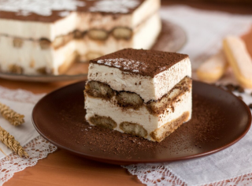

Назад
Классический тирамису
Блюда стран мира

6 часов (ваши 20 мин)

2 порции

6 часов (ваши 20 мин)
2 порции
Ингридиенты:
Печенье савоярди - 10 шт. (80-90 г)
Сыр маскарпоне - 120 г
Сливки 33% (охлаждённые) - 70 мл
Сахарная пудра - 1 ст. ложка
Кофе растворимый - 1 ч. ложка
Шоколад молочный или темный - 25 г
Коньяк (по желанию) - 1 ст. ложка
Пошаговый рецепт
- Подготовьте продукты по списку.
- В 80 мл горячей воды растворите кофе, остудите. (При желании можете добавить в кофе коньяк.)
- Сливки (охлажденные) перелейте в глубокую емкость и взбейте блендером до устойчивых пиков. Добавьте сахарную пудру (по вкусу, можно больше, чем указано в рецепте), перемешайте.
- Маскарпоне добавьте ко взбитым сливкам и перемешайте крем ложкой или венчиком блендера на малой скорости до однородности.
- Крем для тирамису должен получиться в меру густым и держаться на ложке.
- Окунайте печенье савоярди в кофе одной стороной и выкладывайте в контейнер или в порционные креманки влажной стороной вверх, печенье постепенно равномерно пропитается.
- Сверху распределите половину крема.
- Сделайте еще один слой из печенья, смоченного в кофе. Также выкладывайте его влажной стороной вверх.
- Выложите оставшийся крем.
- Сверху натрите на крупной терке шоколад. (Можно посыпать тирамису какао-порошком или какао, смешанным с сахаром.)
- Приготовленный десерт тирамису поставьте в холодильник пропитываться на 5-6 часов или на ночь.
- После того как тирамису хорошо пропитается, достаньте десерт из холодильника, нарежьте в контейнере и аккуратно выложите порционно на тарелки.